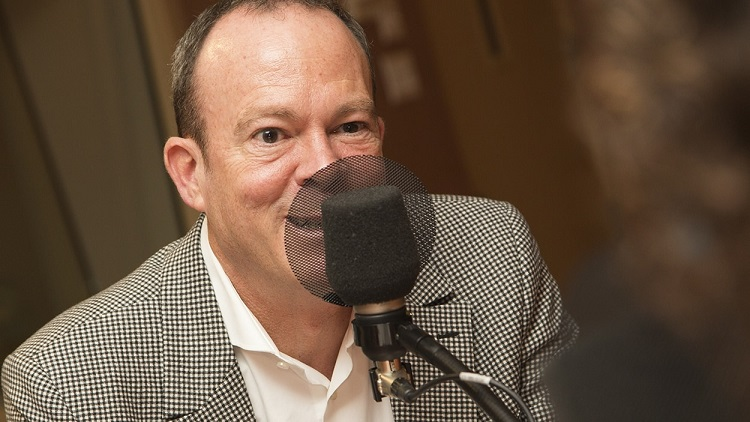
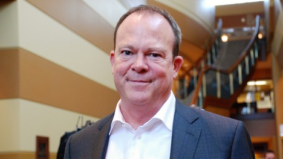

CBC Ad Revenue Precipitously Falling
December 27th, 2020
This is from an article written in December 2019, but I just stumbled upon it now.
TNC:
TDC_ARTICLE_START
CBC TV’s advertising revenue has shrunk 53% over the past five years as the state broadcaster’s audience continues to shrink.
Blacklock’s Reporter found that in the first six months of 2019, TV ad revenues totalled $90.9 million, a decrease from $92.8 million in the previous year. CBC TV’s revenues today are a far cry from the $192.2 CBC TV earned in the same period of 2014.
“Our objective is not to make money but to provide a service and fulfil our mandate,” Radio Canada Executive VP Michel Bissonnette said earlier this year.
“We reinvent ourselves every year to try and find new ways to do things because we have to offer more, but with a smaller budget. So that requires visionary talent.”
The CBC receives $1.2 billion from the Canadian taxpayer every year.
TDC_ARTICLE_STOP
CBC EVP Michel Bissonnette
This guy again. I swear to god every single picture of his is as creepy as this. Most creepier. He's this offputting creep, and I have never been pleasantly surprised by someone with that physiognomy.
Would you let him babysit your child? That's what I thought.
TDC_ARTICLE_START
Last year, the total audience fell to an average of just 269,000 people, a 14% decline from the previous year. In November CBC had to cut 35 jobs, a majority of which were based in its Toronto headquarters.
CBC Radio stopped selling advertising in 2016 after years of abysmal earnings. In 1975, CBC radio predicted it could earn $24.3 million per year with advertisements. The most it ever earned in one year was $1.4 million.
TDC_ARTICLE_STOP
True North News is a typical Donor-Right fake opposition party organization, and the rest of the article they devolve into "CBC is too Pro-Iran," bullshit. Keep in mind this article I just wrote about how the CBC told an established Canadian Documentary Filmmaker that her documentary on the Opiod Epidemic was "too White". Or take a look at this article, where the CBC creates a hilariously fake Anti-White slander about some Abo getting imaginarily attacked by White Cops.
But no, the CBC is bad because it's too nice to Iran. Oh, also it's a STATE BROADCASTING CORPORATION, and muh government is bad, except for when it's funding the Jew Ethnostate of Occupied Palestine.